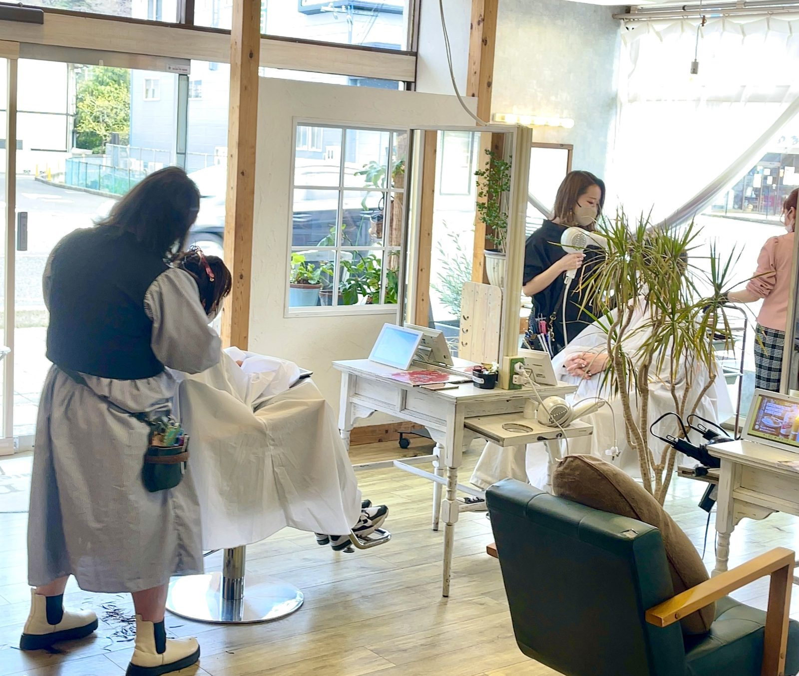
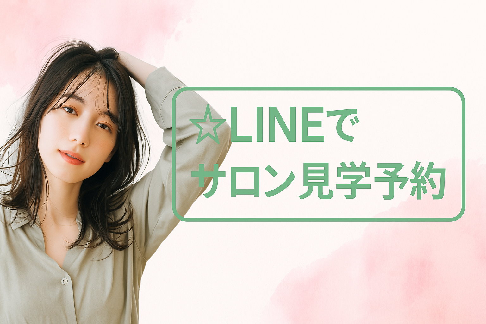
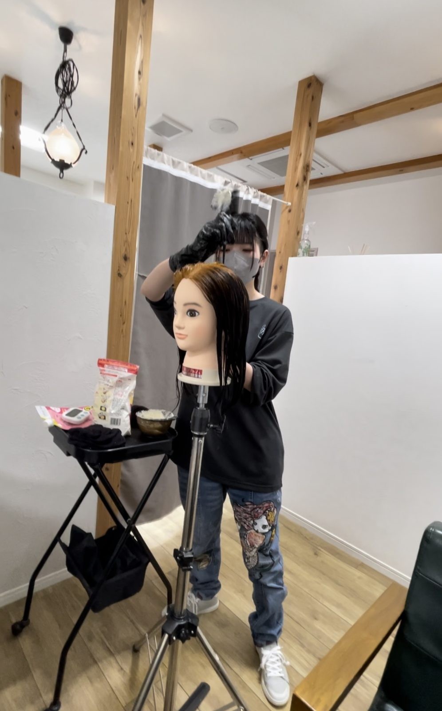
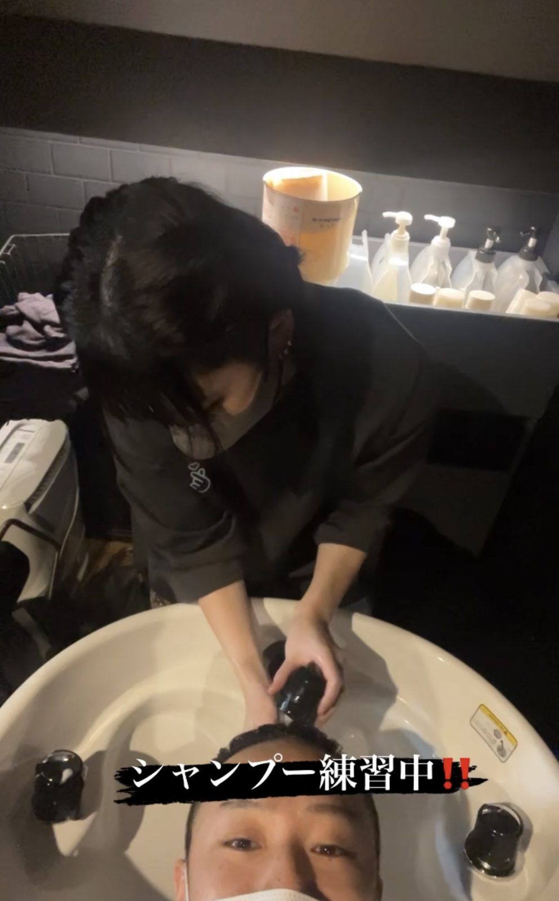
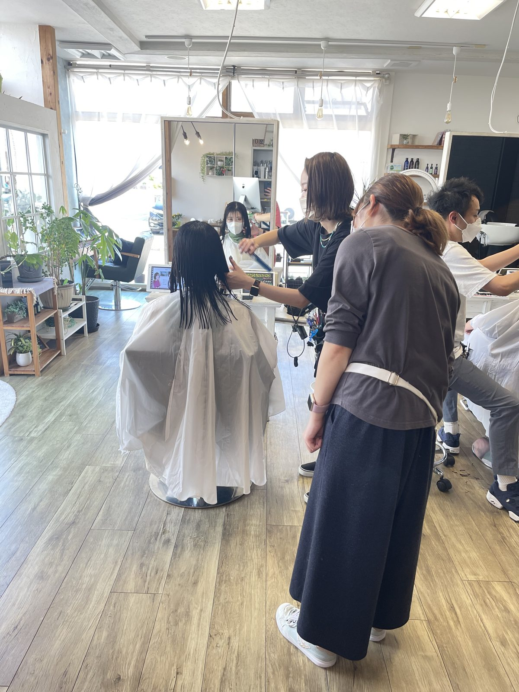
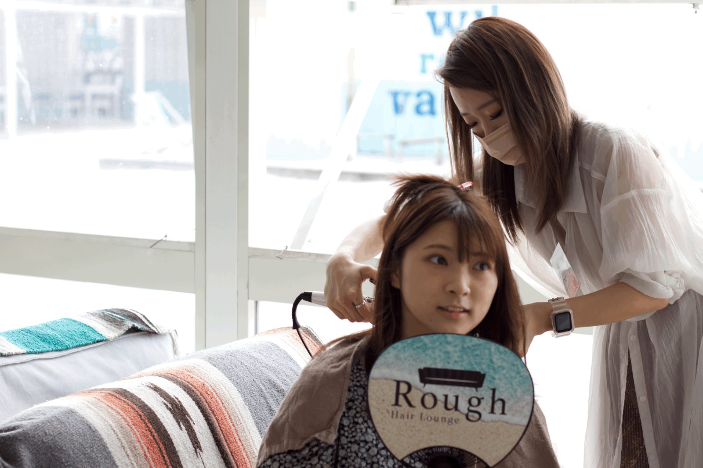
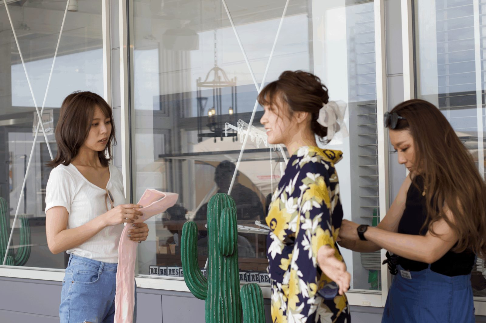
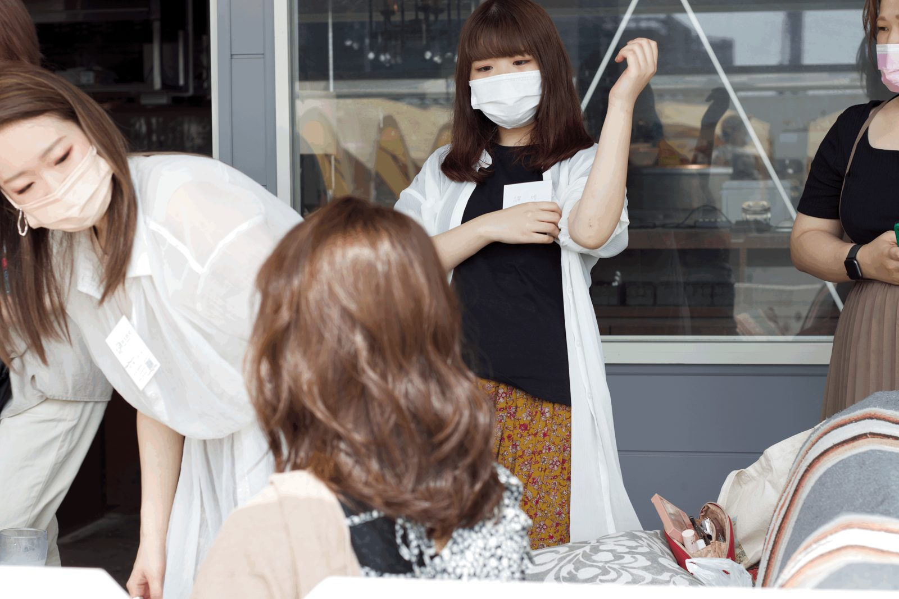

こんなお悩み、抱えていませんか？
• せっかく美容師になったのに、雑用ばかりで技術にほとんど入れない…
• 先輩ですらまだデビューできていなくて、自分もこのままで大丈夫なのか不安…
• ヘアモデルのチェックがなかなか進まず、スタイリストデビューの時期が見えない…
• 技術教育があいまいで、自信のないまま施術に入るのが怖い…
• このままだと、一生アシスタントで終わってしまう気がする…
――そんな不安を抱えていませんか？
nineでは、こうした悩みを抱えて入社してきたスタッフが多く在籍しています。
だからこそ、一人ひとりの状況や不安に寄り添いながら、安心して技術とキャリアを磨ける環境づくりに力を入れています。

nineの教育・働き方サポート
▶ 新卒・中途どちらも安心の育成体制
•新卒入社でも、最短2年でスタイリストデビュー可能！
• 中途アシスタントも半年〜1年でスタイリストとして活躍。
• スタイリストまでに必要な技術はすべて画像・動画マニュアルで完全データ化。
「何を・どの順番で・どこまで習得すればいいか」が明確だから、迷わずスキルアップできます。
▶ 効率よく成長できる練習サポート
• 毎週土曜日の営業後に練習会を開催。その場で技術チェック＆指導が受けられます。
• ヘアモデルは自分で探すだけでなく、店舗側でも募集サポート。
平日の営業中にもヘアモデル施術が可能なので、残業なしで効率よく練習できます。
• 技術合格したものからすぐに入客OK！
カット未経験でも、スパやカラーなどできる技術から現場経験を積んでいけます。
▶ 働きやすさにもこだわっています
•完全週休2日制・年間休日115日以上！
有給休暇も取得しやすく、ほとんどのスタッフが100％消化中。
• 営業時間は18:00まで！定時退社もOK。
帰宅しても、練習しても、自分の時間として自由に使えます。
▶ 安心して長く働ける制度も充実
• 社会保険完備（厚生年金／雇用保険／労災保険）
• 2024年から企業型DC（確定拠出年金）もスタート！
将来を見据えて安心して働ける環境づくりに取り組んでいます。
hair atelier nineには、中途採用で入社したアシスタントが多く在籍しています。
中途入社のスタッフはみんな、前のサロンで「理想のサロンと違う」「思い描いていた美容師ライフと違う」と、将来に不安を感じていました。
そんな不安の中、ラインでの相談やサロン見学など一人ひとりの悩みを解決できるように、会社側でしっかりとサポートできることをお約束。
入社後はそのスタッフにあった教育カリキュラムを準備し、スタイリストとして活躍できるまでしっかりとサポート。
現在在籍スタッフのほとんどがアシスタントもしくはJrスタイリスト ランクで入社。
入社後スタイリストまでしっかりサポート。現在も２名は１００万円プレーヤーにまで成長してくれ、お店を盛り上げるメンバーへと成長してくれております。
１０年以上ブランクがある美容師さんも、アシスタント業務をおさらいしてもらいながら、カットトレーニングをしていただき、半年でスタイリストとしてデビューして活躍しております。
hair atelier nineが求めるアシスタント像
私たちが一緒に働きたいのは、こんな方です。
• 年齢・性別は一切問いません。ブランクのある方も大歓迎です！
• お客様の髪と頭皮をキレイにしたいという気持ちを大切にできる方。
• 美容師として確かな技術を身につけたいという強い想いのある方。
• ヘアデザインだけでなく、美容理論（ケミカル）にも強い美容師を目指したい方。
• 同年代よりも一歩先へ！圧倒的な技術と知識で差をつけたいという成長意欲のある方。
• ただの「スタッフ」ではなく、一緒にnineを盛り上げてくれる仲間になってくれる方。
このような想いを持っている方、ぜひ一度サロン見学にお越しください！
アシスタント給与
💇♀️アシスタント募集【正社員】
美容師として「ちゃんと成長したい」あなたへ。
💰月給：21万円〜
（※みなし残業手当2万円含む）
✨ ＋技術手当：最大2万円支給
✨ ＋店舗販売上インセンティブ：10%還元！
✨ ＋ 交通費支給（上限1万円）
📌努力と成果をしっかり評価！
やればやった分、給与にきちんと反映されます。
「雑用ばかりで成長できない…」なんて、もう言わせません。
アシスタントの仕事
🧴 アシスタントのお仕事内容
お客様に「キレイ」と「癒し」を届けるお仕事です。
🔹 髪質改善とヘッドスパのご提供
当サロンのメインコンセプト。お客様の髪と頭皮を美しく整える、プロフェッショナルな施術を学び・提供していきます。
🔹 技術・接客の提供
シャンプー、カラー、スパなどの施術サポートや、お客様への丁寧な接客をお願いします。
🔹 サロン運営のサポート業務
清掃、洗濯、備品の準備・発注など、快適なサロンづくりに必要な業務もチームで分担します。
🔹 SNSの更新・運用
インスタなどでの投稿を通じて、サロンの魅力や自分の成長を発信していただきます！
🔹 技術向上のための練習・モデル施術
営業後の練習会や、モデル施術を通じて確かな技術を習得。最短でスタイリストデビューを目指せます！
nineの練習風景




講習会や撮影会の風景



hair atelier nineのスタッフ

✂️ 随時、サロン見学受付中！
「実際に働く場所を見てから決めたい」
そんなあなたのために、随時サロン見学を受付中です！
✅ 見学でこんなことができます！
• サロンの雰囲気を見てみたい
• どんなスタッフが働いているか気になる
• サロンワークの様子を見学してみたい
• 実際の教育カリキュラムを聞いてみたい
• 求人内容を詳しく知りたい
• 代表や現場スタッフと直接話してみたい！
🧡 働くスタッフのリアルが聞ける！
見学では、代表だけでなく実際に働いているスタッフにも直接お話いただけます！
「どんな風に働いてる？」「お客様との関わり方は？」など、気になることはなんでも聞いてください。
スタッフの雰囲気＝サロンの空気感。
nineは、そんな”リアル”を大事にしています。
💬 ぜひお気軽にお問い合わせください！
あなたのペースで、あなたらしいサロン選びを。
まずは見て、聞いて、感じてみてください。
👇サロン見学のお問い合わせはこちらから👇